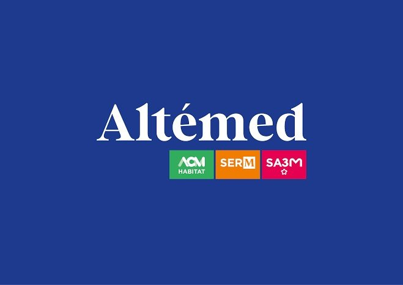

11 MAI → 26 JUIN 2026 · 7 SEMAINES
Altémed — Support informatique & infrastructure réseau
Montpellier
- Support et dépannage informatique.
- Remplacement d'écrans.
- Ajout et remplacement de RAM pour améliorer les performances des PC.
- Traitement de certains tickets utilisateurs.
- Préparation et remplacement de switchs.
- Interventions sur l'infrastructure réseau.